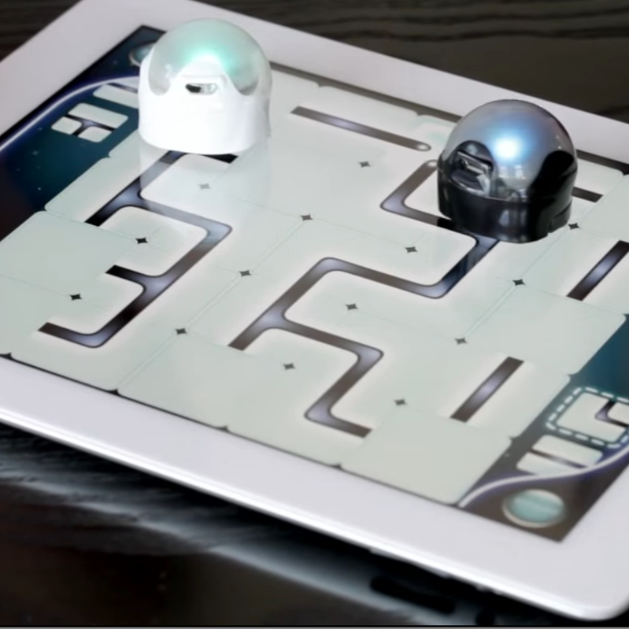
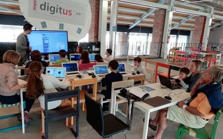
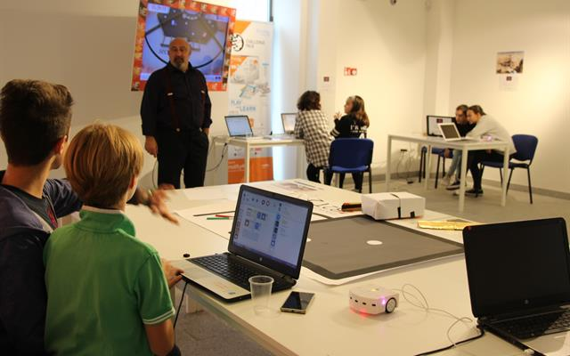

Stripes Digitus Lab
Settore: Innovazione educativa, pedagogia e terzo settore.
Stripes Digitus Lab è il laboratorio di innovazione digitale della Cooperativa Sociale Stripes. Lavora con scuole, docenti e famiglie portando robotica educativa, coding e making nei contesti formativi. La sede di Milano è uno spazio con kit didattici, stampanti 3D e postazioni per sviluppare progetti pratici. L'approccio è hands‑on: si impara assemblando, programmando e testando, proprio come ho fatto durante lo stage.
Sito ufficiale: www.pedagogia.it/digituslab
Galleria Fotografica



Dove siamo
Via Cristina Belgioioso, 171, 20157 Milano MI